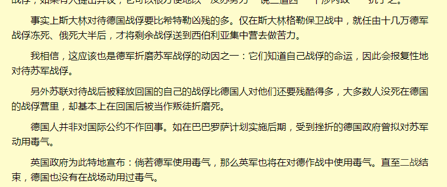

第三十章 他们的人民他们的血
士兵造反的这出闹剧，随着沙娜的出现而戛然而止。她的威信很高，随便就可以呼叫一批巡逻的人来把这些人，连带着他们的排长一起，押送去了监狱。其间没有人反抗，因为，巡逻兵的枪，是上了子`弹的。
.
「一ONE刚准备整顿纪律呢，这些人就撞着了枪口上去。他们会不会被全部枪毙？」
看看被带走的人的背影，再回头看看地上正在被医护人员做紧急处理的时刻，还不忘把恶意通过眼神传递给她的伤员。欧若拉打消了替这些人求情的念头。
这些人口出狂言，还把武器对准长官。难道不应该啐上一口，说他们活该么？难道要怪她长了张嘲讽脸，引诱了这些士兵以下犯上么。
「算了，都毙了也好，省的有人脑子一根筋，找我报仇。」
不好的念头在她脑中升起，她盘算着如何鼓吹一ONE把他们全毙了。
.
“抱歉啊，这些新兵入伍未久，加上前些日子一ONE给大家伙放松了几周，没及时教训他们，让你受惊了。不要紧吧。”
欧若拉动歪心思，演的却像给吓呆了一样，久久没有动静。沙娜没有过多的揣测她，以为她就是看上去的那个样子，于是这么安慰她，还用沾了火药味的手掌亲密的去搓欧若拉的脸。
.
“我没事，谢谢你……不过，你这也太狠了吧，直接就把人家杀了。他的刀是木制的，而且也没削尖。仅仅只是戳伤我的话……罪不至死吧。”
虽然她现在其实并不在乎地上正在被收拾起来的尸体，但考虑到自己以往在共和国卫队不是冷酷的形象，所以她还是面露难色的和沙娜抱怨道。
.
“他犯的不是故意伤害罪，是图谋杀害长官未遂罪。够判死刑了。”
沙娜顺手从门卫那抽了些纸，想替她把沾到衣服上的血浆擦去。可那已经几近干涸了，她只能擦去表面的薄薄一层。
“晚上我让人给你送套新制服吧，这套不能穿了，晦气。”
.
欧若拉佯做难过，没搭沙娜的话。她低头，抽哒了一会儿，好像才把心结给解开。用鼻子低低出了一口气后，她换上勉强的笑容，似乎是说自己没事了。
.
“军队有军队的规矩，你不能拿普世价值对待士兵。仁爱，平等这些小市民思想会影响士兵的战斗力。没有纪律，尊卑等级的部队是打不了胜仗的，从古至今，国内国外，无一例外。”
.
“嗯，我知道。”
她们已经离开了大厅，往医院的高层走去。欧若拉没说她要去干什么，沙娜没有说自己跟着欧若拉做什么。走了几层后，欧若拉停住了。
“沙娜，我有一个问题。”
.
“什么？”
.
“你是不是清楚这件事。你默许的？或者，你授意的。”
欧若拉话说的没头没尾，但她觉得沙娜应该明白她在说什么。
沙娜是装甲部队的山头，除了她以外的所有装甲兵的行踪，她几乎都了如指掌。楼上的病房里躺着的那些德国女人，是共和国卫队在攻打布鲁尼黑帮时抓的俘虏，那次行动有装甲车出动。而装甲车的驾驶员在十天里也参与了对女人们的暴行。
有不少于两百名的步兵知道军需仓库里藏着什么。那以沙娜为首的军队管理层会不清楚这件事吗？
.
沙娜没有想掩饰的意思，她听完后便大方的点头：
“是的，我知道、要保持军队能有旺盛的士气，士兵的生活质量是必须得到重视的。他们需要烟，酒，足量可口的食物，以及，女人。”
.
“这是土匪的做法！你把你说的军纪放到哪里去了！？”
.
“你好像对军纪的理解有点问题。不准虐俘是日内瓦公约的内容，军纪是为保证军队战斗力而要求官兵必须遵守的规章制度。这些俘虏是经参谋本部批准，发放给他们的军需品，何来违纪。”
沙娜还把欧若拉当孩子。凭借身高优势，她揉着欧若拉的头发，以长者的姿态和她解释道。
.
欧若拉大概能理解沙娜不把德国俘虏当人看的心理。沙娜做了这么多年皇后皇太后，寻常人命在她眼中，已经被数据化了。沙娜现在的样子，就是不会太久的将来，她的模样。
“你来这里，是为了把她们收回，继续像军需品一样的发放给士兵？”
所以，她没有愤怒，甚至还点头，接受了沙娜的解释，之后平静的询问沙娜的来意。
她没有立场去指责沙娜了。她不也已经把共和国卫队的人命，只看做是自己升迁路上的垫脚石么。
.
“不。一ONE可能会听说这件事，所以我得提前来提醒一下她们。让她们注意一下什么话能说，什么不能。一ONE虽然不懂怎么管理，但我们也不能当众打他脸。”
一ONE说一套，共和国卫队的下面做一套。沙娜觉得这很合理，并且不打算让一ONE认识到这个问题。
她想的很好，阳奉阴违既可以明面上维持一ONE的威信，又不会因为一ONE的一些小瑕疵影响军队的战斗力。可现实是，阿莱克修斯已经知道了所有，她不想让他知道的事情——欧若拉告的密。
.
“……”
脑筋微微转一下后，欧若拉决定不告诉沙娜，自己已经把他们的一切都告诉了一ONE。那会显的自己太心机，似乎几个月来的卖萌都只是在降低他们的戒心。
“那你先进去吧。她们都是我送过来的，你负责唱白脸；等你结束了，我再负责唱红脸。”
.
“你进步了，再接再厉。回去我发点资料给你，”
欧若拉的回答让沙娜欣慰。她不是任性的孩子，有这个年龄该有的成熟和觉悟。这是幸事，至少她不用担心哪天欧若拉给一ONE吹丧气的枕头风了。
.
沙娜在四层和欧若拉分开了，那些女人的病房集中在这一层。欧若拉则继续向上，一直走到了六层才停下，因为留梨在这里。
病床的车轮与地面的摩擦声在欧若拉接近六层的楼梯口时，愈来愈响。等她走完最后一级台阶，盖着白布的病床刚好出现在了她的面前。
“停一下。”
.
“罗曼诺娃长官……”
器械护士很怕欧若拉，像见了鹰的小鸡一样缩着脖子。在几小时前，欧若拉将女人们送来医院要求给她们治疗。医院派好任务后，原本的主刀医生听说了这些女人是从哪抓来的后大发雷霆，拒绝救治她们。欧若拉劝说无果后，便一拳打在医生的脸上，牙齿都给他打碎了一颗。
在欧若拉掀开白床单的过程里，护士们情不自禁的后退了一点。把主刀医师打伤后，她就直接指派自己的亲信给这女人做手术了。现在人没有救回来，她又不可能和亲信发火，那就只可能迁怒于她们了。
.
病床上的女人眼睛睁的大大的，显然，她走的并不安详。欧若拉向右看去，她看到楼层的尽头那里，留梨蹲靠在墙边，抱着头，没什么生气。
“怎么死的？”
.
起初没人敢应她。直到欧若拉的目光锁住了她们中的一人后，那人才硬着头皮回答道
“败血症。送来的时候太晚了，都已经感染性休克了。如果能早一天，说不定还有机会。”
.
欧若拉不置可否的点头，拉上床单，挥手让护士们离开了。她不太在乎那个女人的死，只是怕她是因为医疗事故而死，那样的话，或许会打击到留梨。既然是人力无法回天，那就无所谓了。
.
“你不会是想要安慰我吧。”
当欧若拉走到留梨身边，蹲下想和留梨说什么时，留梨先开口了。她的神情不太悲哀，也不呆滞。虽然能看出她的难过，但表现的比欧若拉那种要死要活的难过要好多了。
.
“……不应该吗？毕竟，她是死在你的手术台上的。”
.
留梨摇头：
“我做了八年医生，死在我手术台上的病人，早都超过两位数了。我是医师又不是巫师，没有起死回生的神通，救不回来的病人并不会打击到我……我只是对那些士兵把粗糙的，起了很多处木刺的木刀插进过她的喉咙和那里，感到很不舒服。”
他们残忍到极点的行径足以令任何受过现代教育的人感到愤慨，恨不得把他们所做的一切都还到他们身上。可这已经不可能了，那些人在昨晚就都已经被维特，带着没赎情的罪，轻松的死去了。
.
“……”
察觉到欧若拉忽然眯了眼，移走了自己的视线，显然是触了她什么心事的样子。留梨问她怎么了，欧若拉不平静的捏了会儿手后，才轻声回答
“勾起了点不好的回忆。你知道，下诺夫哥罗德国际酒店那时候，俄国人也是把燃烧的烟头塞进了我那里。或许我该庆幸，庆幸自己够嬴荡，在之前被他们侮辱的过程里出了足量的水，才没给烧出事来……摸我干嘛？”
.
“想宽慰你。”
.
留梨环抱了她，她没拒绝。留梨是她的第二爱人，完全有资格给她温暖的怀抱。
“用不着，都过去大半年了。而且，我现在也不像以前那么脆弱。你见我出神，是因为我在想些别的事情。”
不等留梨询问，她就继续说道
“我想象了一下，几十年后的人会怎么看待德国俄国这些年的历史。我想他们中的有些人会同情俄国，为俄国向德国的复仇拍手叫好。他们会说侵略之初，德国就是怎么对待俄国平民的，现在俄国加倍的把残忍奉还；而有些人则会崇拜，迷恋德国的坦克和他们所向披靡的军队，说俄国蛮夷民族该被征服。说之所以德国的军队那么残暴，是因为预见了未来，预见了俄国人会虐待德国战俘，所以提前对俄国人暴虐。”
“咯咯……前面我能理解，后面这是什么逻辑？你怕不是给气糊涂了。”
留梨笑了出来。因为知道对方会狠毒的报复自己，所以要先下手为强虐待别人，还有这样引人嗤笑的道理吗？
.
“不是所有人都是可以理喻的。留梨，我们接受过普世价值的教育，有自己的思考能力，有成熟的三观，会分辨是非。可并不是所有人都会和我们一样。”
.
“我还是没法想象。”
留梨的职业是医生，她的同事们也都是医生。只有排名靠前的医科大学的优秀毕业生才能进入德国国立医院工作，所以她不太能理解没文化是一种什么样的体验。而且，她也不在乎是不是有人蠢，有人坏。她又不需要去和那些人打交道，她管好欧若拉就行了。
“别想那么远，你没必要同情俄国的。你的过去给了你痛恨俄国的资格，不是吗？而且，你不是后人，也不是中立的评论家。你是德国公主，货真价实的德国公主。除非你想造反，否则，你的立场是改变不了的。”
.
“我……”
欧若拉不赞同留梨的观点，她想驳斥她，可她不知道从哪斥起。她有好多话要说，它们争先恐后的想从她狭窄的喉咙里涌出，结果就是都卡在了里面，谁都出不来。
.
“嗯？不对吗？”
.
异样的光芒在欧若拉完好的右眼中忽明忽灭。每当自上往下的审视着这个世界时，她总会发自内心的感到这个世界的黑暗和残酷。某种念想在她的心底有复苏的迹象，那是绝大部分的人都做过的改变世界的梦。但是没过太久，也许就两三秒吧，她就把那不切实际的念想压回了深渊，光芒也随之熄灭了。
为什么她空虚到站到高出去看这个世界呢？乐在其中不好吗？她尝过够多的暗了，未来的日子里，安心享福不好吗？命运可不总是公平仁慈的，难得对她公平了一次，她应该珍惜啊。
“你说的对……我是德国的公主，我没有立场，更没有理由去为俄国人着想……”